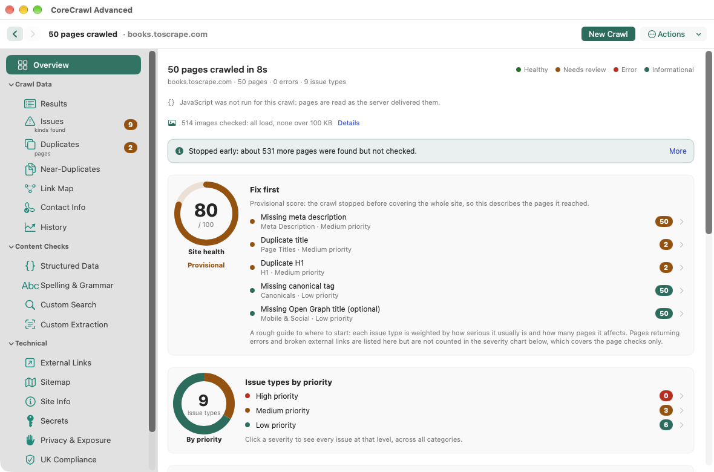
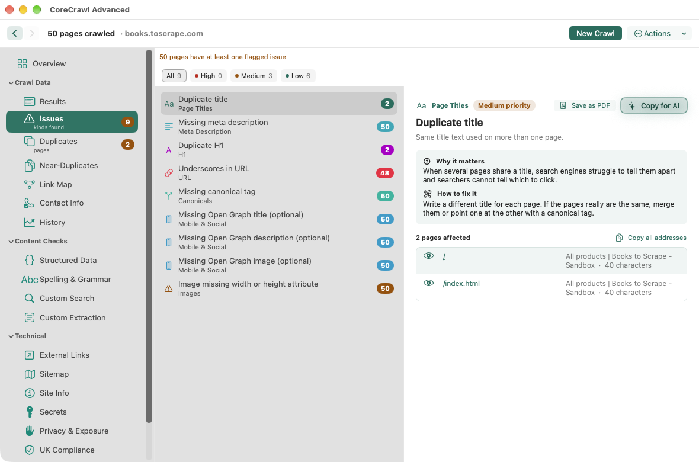
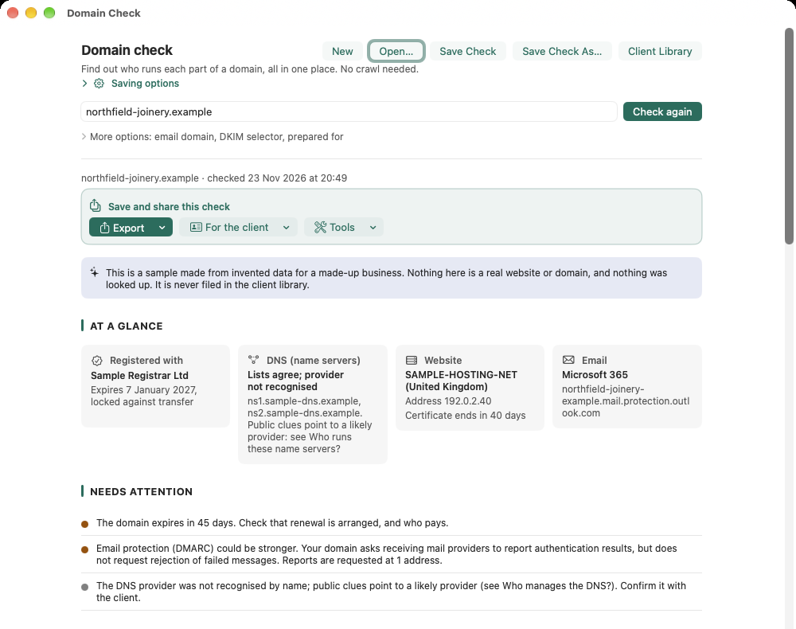

Website audits for your Mac. Free and private.
CoreCrawl Advanced crawls your website and shows you what's broken, missing or holding it back in search — broken links, redirect chains, missing titles, repeated titles and descriptions, indexing problems and more. For anyone who looks after other people's sites, it also checks who runs a domain's registration, DNS, website and email, and keeps every client's checks together. It all runs on your Mac. No account, no subscription, nothing locked behind a paywall.
Version 3.0.0 · macOS 13 or later · Apple silicon Macs · 16 MB
The first time you open it, macOS asks you to confirm, because it's a free independent app. It takes about 30 seconds: here's how.

Know what's wrong, and where to start
Most audit tools hand you a spreadsheet. CoreCrawl Advanced tells you what matters first.
A health score and a "Fix first" list
A crawl with enough pages to assess ends with a score out of 100 and the five problems worth tackling first, ranked by how serious they usually are and how many pages they touch. Click one to see exactly which pages.
Your results stay on your Mac
The crawl, the analysis and your results are kept on your computer, and nothing is uploaded to Tech Reality. CoreCrawl Advanced only contacts the website you ask it to audit, plus the links and images on its pages to check they work, and any optional checks or page previews you choose, such as a Domain Check of public records. No sign-up, no analytics. If you save files into a synced folder such as iCloud Drive or OneDrive, that provider syncs them.
Every finding explains itself
Each issue says what it means, why it matters and which pages are affected — written for people who run websites, not just for specialists.
Watch it work
While CoreCrawl Advanced scans, the Overview fills in as it goes: a chart of how the pages are turning out, running counts of broken pages and missing or repeated titles and descriptions, and a progress bar. No staring at a spinner.
See how your site fits together
An interactive link map shows every page, ring by ring from the homepage. Spotlight the pages with problems, search for a page, click one to see the route a visitor would take, and save the map as a picture to share.
What it checks
Over 40 checks across the things that most often hold a site back.
Links and status
- Broken pages and server errors
- Broken external links
- Broken and oversized images
- Redirect chains, loops and meta refreshes
- Links that point at redirecting addresses
Page basics
- Missing, long, short or duplicate titles
- Meta descriptions
- Headings (H1)
- Awkward URLs
- Why each issue matters and how to fix it
Search and indexing
- noindex and nofollow pages
- Canonical tags
- Hreflang and pagination
- Sitemap compared with what was crawled
- AI crawler access and llms.txt
- Visits your pages using AI crawlers' names, to spot a firewall turning them away
Content
- Repeated titles and descriptions
- Near-duplicate page text
- Spelling and grammar
- Structured data (schema.org)
- Custom search and data extraction
Site structure
- Orphan and weakly linked pages
- Pages buried deep in the site
- An interactive link map: spotlights, search and a page preview
- Site-move checker for old addresses and redirects
- History: chart your health score across crawls
- Finds Freepost addresses and phone numbers, with a human-vs-automated hint
- Mobile viewport and social-sharing tags
Accessibility, privacy and safety
- Missing image alt text and empty links
- Exposed API keys and secrets, with how to revoke them
- Staging leaks, cookies, trackers and public source maps
- UK cookie-consent and privacy-notice checks
- Cookie Check: recognised cookies found on fresh visits before any choice, after Accept and after Reject, and the services contacted. Service contact alone does not show what was sent or whether a cookie was set
- Files that should never be public (on sites you own)
Every problem, with the pages behind it
Open Issues to see everything found, grouped by type. Pick one to see the affected pages, and click through to inspect any of them.
- Filter, sort and search every crawled page, or narrow to OK, Redirects, Errors or pages with issues
- Preview any page beside the results without leaving the app
- Back and forward buttons, so you never lose your place
- Save a crawl and reopen it later, or file it under a client
- Compare two crawls to see what was added, removed or changed
- Export to CSV, Excel, JSON or a PDF report

For people who look after other people's websites
Web designers, IT technicians and agencies: check a client's domain, keep every check in one place, and hand over something tidy.

Who runs what, on one page
Type a domain to see who it's registered with, who runs its DNS, where the website is and who handles email, with anything urgent first. A control sheet records who pays and who holds each login, ready for a move.
What a Domain Check reads
- Who the domain is registered with, its expiry and transfer lock
- Who runs the DNS, the website and the email
- SPF, DKIM and DMARC, plus optional mail-security records
- DNSSEC and which companies may issue certificates (CAA)
- Website certificate end dates, and each name server asked directly if you choose
Every check, filed by client
Domain Checks file themselves under the client you name, and you can file website crawls beside them. Plain dated files on your Mac, or in a folder you choose such as iCloud Drive or OneDrive. Nothing is ever overwritten.
The Client Health Pack
One A4 PDF for the client: a cover with site health and the domain summary, then the full domain report and, if you've filed a crawl of the site, the website report. Add your own business name and logo to the reports if you like.
Keep track of renewal dates
Domain and certificate end dates for every client, soonest first, kept apart because they are renewed in different places. Save them as a calendar file with a reminder two weeks before each one.
Check a list
Paste up to 100 domains, name the client, and each is checked in turn and filed. Domains not checked for 90 days are marked, with one button to check them all again.
Install in three steps
CoreCrawl Advanced is a free app from one person, and I haven't put it through Apple's paid review (called notarisation), so macOS asks you to approve it the first time. That means Apple hasn't reviewed the app, so macOS can't confirm it is unaltered. Only install it from the official download page and check the checksum; the licence and what it contacts are published. It's a one-off, and takes a minute.
Download
Download CoreCrawl Advanced 3.0.0 and open the file. Drag CoreCrawl Advanced into your Applications folder.
Open it
Double-click CoreCrawl Advanced. macOS will say it can't verify the app — that's expected. Click Done, not Move to Bin.
Allow it once
Open System Settings › Privacy & Security, scroll down and click Open Anyway (it appears after the first attempt to open the app). The step-by-step guide with pictures shows each click.
Want to see what you get first? Here is a one-page quick start.
New to site audits? The CoreCrawl Advanced User Guide (PDF, 35 pages) explains every tab, what the messages mean, and what to do about them. It is also included in the download.
Got an idea, or hit a snag? Choose Help › Suggest a Feature or Report a Problem… in the app. It prepares an email to me with your version details, and CoreCrawl Advanced never includes the websites you scan.
All downloads are hosted on GitHub. The official download page is the only place to get CoreCrawl Advanced from; please share that link rather than the file.
Want to check the download is untouched? Its SHA-256 checksum is in this small file. Run shasum -a 256 CoreCrawl-Advanced.dmg in Terminal and compare.
Honest about its limits
Who it suits: owners of WordPress, Shopify, Squarespace and similar sites, and anyone who wants plain-English answers on a Mac without setting up a server. Who should choose something else: teams who need a shared or scripted crawler, and anyone crawling hundreds of thousands of pages.
CoreCrawl Advanced is a focused tool, not everything. Before you download:
- JavaScript rendering is optional and slower. By default it reads the HTML your server sends, as a search engine's first pass does. Turn on Render JavaScript in Advanced settings to read pages built in the browser as a visitor sees them. Scripts hosted on other websites are not loaded, so a page that needs one may still look empty.
- A Domain Check reads public records, not your accounts. It can't sign in to a registrar or DNS host, so who controls each account is for you and your client to confirm.
- No Google Search Console or Analytics link-up. That's deliberate — it keeps everything on your Mac.
- It has page limits. Quick scan stops at 50 pages, Full site at 1,000 and Large site at 10,000; you can set your own up to 100,000.
- It isn't notarised by Apple, so macOS shows a warning the first time you open it. The download includes a short guide to the two clicks needed, once.
- Apple silicon Macs only (M1 or later), running macOS 13 or newer. There's no Windows or Intel version.
- Audit only sites you own or have permission to crawl. CoreCrawl Advanced respects robots.txt by default and is gentle with servers, fetching five pages at a time unless you change it.
Questions
Why was it made?
CoreCrawl Advanced is the free follow-up to CoreCrawl, made as a thank-you to everyone who tried it. It was built with AI help, but it took weeks of testing and tweaking by hand to get right, and everything stays on your Mac.
Is it really free?
Yes. There's no paid version and no trial, and no feature or page cap is locked behind payment. You choose how many pages to crawl, up to 100,000 — very large crawls limit some content-heavy checks to protect memory, but there's no paid tier to unlock. It's a free tool from Tech Reality. If it saves you time, you can buy me a coffee — completely optional.
Where does my data go?
Your results are not uploaded to Tech Reality. Crawls, results and saved files are kept on your Mac. CoreCrawl Advanced only makes requests to the website you're auditing and, after the crawl, to the external addresses that website links to and to each image its pages use (wherever that image is hosted), to check they still work and how big the images are. A few optional checks make extra requests to the same site: reading its sitemap and script files, looking for public source-map files, reading robots.txt and llms.txt for the AI Readiness check, and, only after you confirm the site is yours, asking for about 40 well-known addresses that should never be public. Two more checks also run only after you confirm the site is yours: "Visit as AI Crawlers" asks for up to three of your pages under seven AI crawlers' names, plus an ordinary visit, one request at a time; and "Cookie Check" opens your start page three times in a separate, throwaway browser (no choice, after Accept, after Reject), which runs the page's scripts and contacts the outside services the page itself loads, and discards that browser's session afterwards (the page's own services may still log the visit). The Site Move tab requests the old addresses you type in and follows where each one redirects to, so it may contact those places too. A further opt-in check, "Check Beyond This Site", contacts the Internet Archive’s Wayback Machine (sending the addresses, with any query strings, of up to 15 crawled pages) and, only if a page references one, a cloud storage service (Amazon S3, Google Cloud Storage or Azure), to see whether an old snapshot still shows something the live page doesn’t, or whether that storage lists its files publicly — again, only after you confirm the site is yours. CoreCrawl Advanced also keeps a small record of scores, counts and the site's host name for each site you crawl, on your Mac, so its History tab can chart progress: no page content, and you can clear it. Any Profiles you save keep a site address and your settings in the same way. The Client Library is a folder of ordinary files on your Mac (or in a folder you choose; if that is in iCloud Drive, OneDrive or another synced folder, that provider may sync copies using your account), and the start screen's Recent list remembers the last few files you saved or opened on this Mac. Neither is uploaded to Tech Reality. The built-in samples are made-up and look nothing up. Opening a page preview loads that page the way a browser would, running its scripts and the resources it loads from other services, so the site can see a visit and may set temporary cookies; the preview is separate from your own browser and its session is discarded when you close it. The Domain Check and Registration look-ups ask the public internet registries (IANA and the domain's registry) and your Mac's DNS service about the domain name; to find clues to who runs the name servers, it also asks the public registries who holds each name server's address and which registrar holds the name servers' own domain; the optional "Check each name server" button, only when you press it, sends DNS questions from your Mac directly to each of the domain's own name servers (the domain's SOA and NS records; at most eight names, up to three IPv4 addresses each; IPv6 addresses are not asked), then asks one of the parent zone's servers (such as the .com or .uk registry's) where the domain is delegated, asks one of the domain's own servers how long its answers may be kept (time-to-live), and asks one of them again for some records your Mac's DNS service left unanswered (not the DNSSEC record, which lives in the parent zone), so those servers can see your Mac's internet address, and opening or exporting a saved check never does; and the Certificate check makes one secure connection to the domain's own website, and the Login Entry Points check requests a short list of common sign-in addresses on your own site. Only when you choose Check for Updates does it contact GitHub, to ask which version is the latest. The link and image checks run automatically after each crawl, and the Beyond This Site check sends the addresses of up to 15 crawled pages to the Internet Archive. Nothing is ever sent to Tech Reality. The app has no account system and no analytics.
How do I get updates?
Choose CoreCrawl Advanced ▸ Check for Updates… from the menu. If a newer version has been published it tells you what is new and opens the download page in your browser; it never downloads or installs anything by itself and never checks unless you ask. You can also press Watch ▸ Releases on the GitHub download page, or subscribe to its releases feed, and GitHub will tell you about every new version.
Is it safe to install?
It installs like any Mac app and runs in Apple's app sandbox. The warning on first launch appears because I haven't put the app through Apple's paid review (notarisation), so Apple hasn't checked it. It is not a report that anything was found wrong with it. You can verify your download with the checksum in the install section.
Is CoreCrawl Advanced a security or malware scanner?
No. The Secrets and Privacy & Exposure tabs look for specific, well-known signs of accidentally exposed information — API keys left in code, staging addresses, public backup files and similar. A clean result there means those particular checks found nothing; it doesn't mean a site is secure, and CoreCrawl Advanced shouldn't be treated as a substitute for a proper security audit.
How big a site can it handle?
It's built and tested for sites from a handful of pages up to a few thousand. You can set the limit as high as 100,000 pages, but very large crawls take much longer and use a lot of memory, so some content-heavy checks are limited to protect your Mac. You choose a scan size when you start — a quick sample, the whole site, or a higher limit for large sites — and it tells you when a crawl stopped before covering everything.
Will it slow down my website?
Unlikely: it fetches five pages at a time by default and respects robots.txt, including a requested wait of up to 30 seconds between requests. A small site on shared hosting can still feel it, so choose Scan gently (one page a second) or lower the setting in Advanced settings.
Why does my JavaScript-heavy site look empty?
By default the app reads the HTML the server sends, so sites that build their content in the browser can look nearly empty. Turn on Render JavaScript in Advanced settings to read them as a visitor sees them. The Overview then says how many pages were rendered, how many only show their content once scripts run, and how many could not be rendered. It also warns when a crawl stopped before covering everything.
How do I suggest a feature, report a bug or ask a question?
In the app, choose Help › Suggest a Feature or Report a Problem…, write your message and press Open in my email app (or Copy if you use webmail). It prepares an email to support@tech-reality.co.uk with your CoreCrawl Advanced and macOS versions, which you can delete. You can also just email me. Tell me what you did, what you expected and what happened. Please don't send passwords or private website data.
Can I use it on client sites?
Yes. You can use CoreCrawl Advanced free of charge for personal, business, agency and client work, as long as you have permission to crawl the sites you audit. The reports and screenshots you make are yours to share.
Is it open source? Can I share or sell it?
No. CoreCrawl Advanced is free to use but it is copyrighted software, not open source. Nobody may sell it, resell it, bundle it with other software or products, or host copies of the download elsewhere. Please link people to this page instead. The full licence is short and readable.
Enjoying CoreCrawl Advanced?
It's free and I keep improving it. If it's saved you time, a coffee helps.
☕ Buy me a coffeeOr see more from Tech Reality on YouTube.